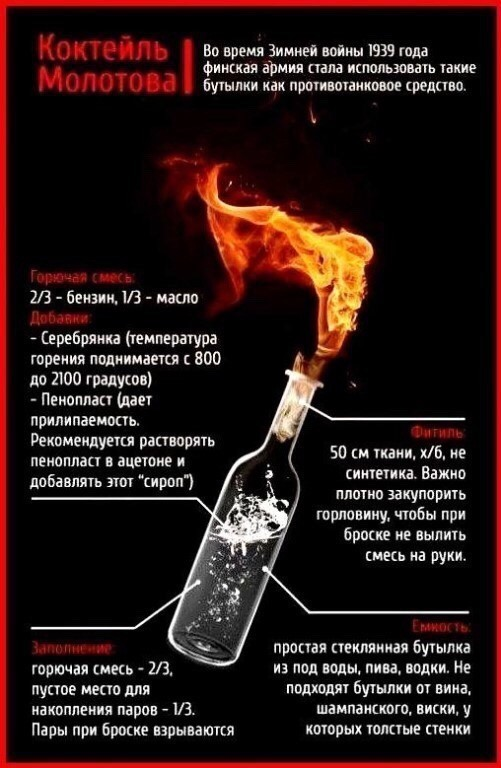

12 Декабря 2022
РЕВОЛЮЦИЯ
Время покончить с кровавым режимом
12 декабря - годовщина принятия нашей конституции, которой сейчас подтирается тираническое правительство Кремля.
Тоталитарный режим Путина выпустил очередной закон ограничивающий права человека в России, один из многих в череде человеконенавистнеческих законов этого тысячелетия. Сколько можно терпеть "закручивание гаек" и видеть как страна превращается в фашистскую империю с культом личности "царя"?
ВРЕМЯ ДАТЬ БОЙ! Довольно мирных протестов - они показали свою бесполезность в современных реалиях! Тоталитарная машина Кремля не остановится пока один за другим не будут отняты права людей, а сами граждане не превратятся в рабов системы. Всюду висят символы войны, все ресурсы и человеческие жизни брошены на войну с братским народом. Это должно прекратиться! Ради мира и свободы!
План революции:
- Штурм правительственных зданий всех городов нашей страны. В регионах вынудить работников администраций городов прекратить работу, тем самым разобрать части правительства Кремя. В это же время граждане столицы разберутся с оцепеневшим от страха Кремлем.
- Свержение диктатора и его фашисткой партии "Единая Россия". Насильственно, если придется.
- Освобождение политзаключенных и оппозиции Кремля.
- Установление революционного правительства на время организации референдума.
- Открытое и честное всенародное голосование за нового президента. На этот раз слуги народа, а не вождя. Голосование с присутствием камер на избирательных участвах и международных наблюдателей.
- Отмена поправок в конституцию, которые всячески ограничивают права и свободы человека, созданные администрацией Путина.
Вы действительно готовы терпеть и дальше? Видеть как мировое сообщество отворачивается от России и она превращается в страну-изгоя? Быть навсегда отрезанным от внешнего мира, от мировой культуры и туризма, от Интернета? Есть только один выход. Все, кто не желает, чтобы они, их дети и внуки жили рабами в нескончаемом ГУЛАГе, должны выйти 12 декабря и нанести удар по пособникам фашистского режима!
Наши предки воевали с фашизмом, должны воевать с ним и мы.
Выход один.
Ссылки на полезные ресурсы:
ОВД-Инфо: https://ovdinfo.org/
Оказание первой медицинской помощи: https://mchs.gov.ru/deyatelnost/bezopasnost-grazhdan/universalnyy-algoritm-okazaniya-pervoy-pomoshchi_5
Расположение администраций городов: https://gogov.ru/adm
